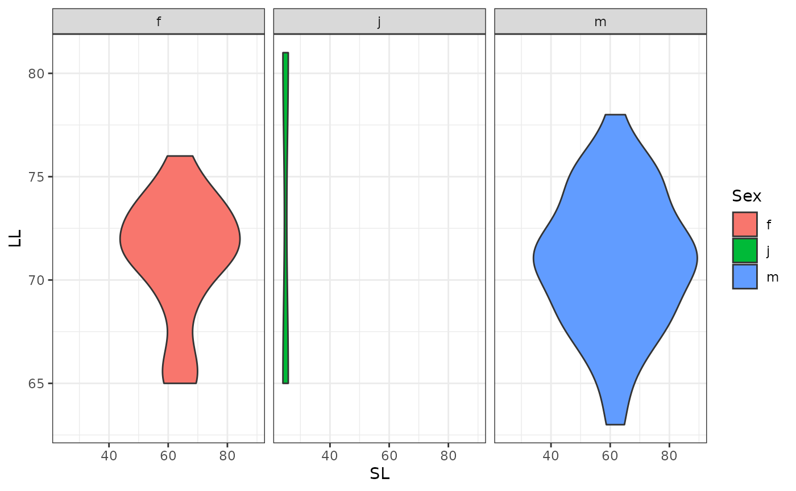
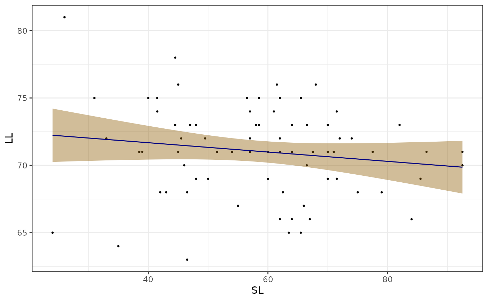
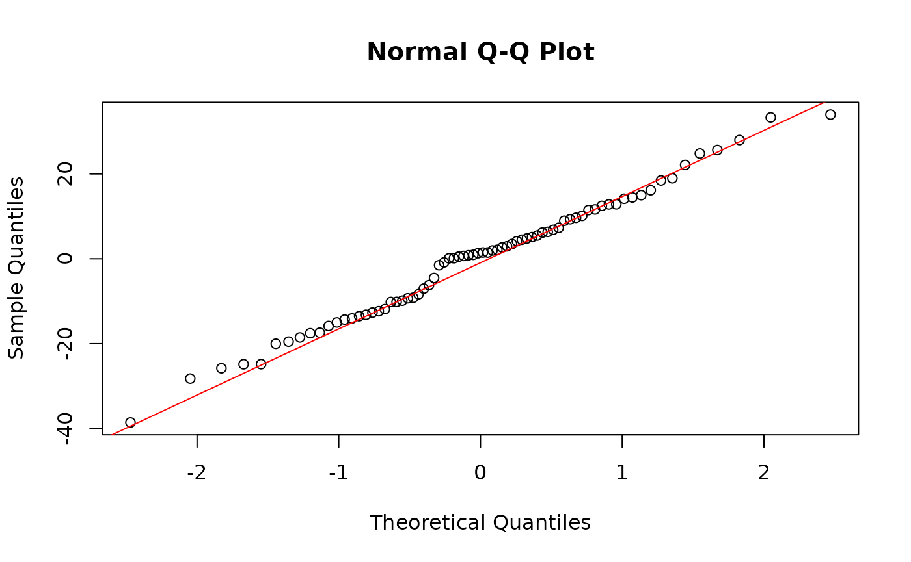

SchusterRPackage.Rmd-A few words about your motivations in writing this R package/ What is it meant to do, what type of data does it wrok with
library(devtools)
#> Loading required package: usethis
devtools::install_github("BennyShoe/Project_three")
#> Using GitHub PAT from the git credential store.
#> Downloading GitHub repo BennyShoe/Project_three@HEAD
#>
#> ── R CMD build ─────────────────────────────────────────────────────────────────
#> * checking for file ‘/tmp/RtmpWWzdLf/remotes7a61130e78a/BennyShoe-Project_three-030d30e/DESCRIPTION’ ... OK
#> * preparing ‘SchusterRPackage’:
#> * checking DESCRIPTION meta-information ... OK
#> * checking for LF line-endings in source and make files and shell scripts
#> * checking for empty or unneeded directories
#> * looking to see if a ‘data/datalist’ file should be added
#> * building ‘SchusterRPackage_0.0.0.9000.tar.gz’
#> Warning: invalid uid value replaced by that for user 'nobody'
#> Installing package into '/tmp/RtmpZKF2VJ/temp_libpath145372402e4'
#> (as 'lib' is unspecified)
library(SchusterRPackage)
library(readr)
library(googlesheets4)
gs4_deauth()
download.file("https://github.com/BennyShoe/Project_three/raw/refs/heads/main/data/R_Project1_Our_Data.csv","/cloud/project/data/Fish_Data.csv")
Fish_Data <- read.csv("../data/Fish_Data.csv")
SchusterRPackage::Filter_Function(Fish_Data)
Fish_Data <- read.csv("../data/Fish_Data.csv")
library(ggplot2)
SchusterRPackage::Violin_Plot_Function(Fish_Data, SL, LL, Sex, "Sex", "SL", "LL")
Fish_Data <- read.csv("../data/Fish_Data.csv")
library(dplyr)
#>
#> Attaching package: 'dplyr'
#> The following objects are masked from 'package:stats':
#>
#> filter, lag
#> The following objects are masked from 'package:base':
#>
#> intersect, setdiff, setequal, union
SchusterRPackage::my_function(Fish_Data, SL, 25)
#> Check small value: 22.25
#> Check small value: 15.5
#> Check small value: 12
#> Check small value: 23.25
#> Check small value: 24.75
#> Check small value: 19.5
#> Check small value: 24
#> Check small value: 17.5
#> Check small value: 16.5
#> Check small value: 22.75
#> Check small value: 23.5
#> Check small value: 20.75
#> Check small value: 20.75
#> Check small value: 13
#> Check small value: 23.25
#> Check small value: 21
#> Check small value: 22.25
#> Check small value: 20
#> Check small value: 19.25
#> Check small value: 22.5
#> Check small value: 22.5
#> Check small value: 21.5
#> Check small value: 23
#> Check small value: 24
#> [1] 22.25 31.25 33.25 15.50 12.00 23.25 39.50 24.75 36.00 19.50 43.25 35.50
#> [13] 24.00 30.75 17.50 33.00 25.00 35.75 33.75 31.00 30.00 16.50 22.75 23.50
#> [25] 41.00 30.50 20.75 20.75 34.00 13.00 23.25 21.00 32.00 37.00 28.50 35.00
#> [37] 22.25 28.25 20.00 42.00 37.50 35.75 31.75 32.75 31.00 42.75 46.25 38.75
#> [49] 35.00 46.25 19.25 22.50 32.00 32.75 22.50 33.50 27.50 21.50 33.25 23.00
#> [61] 29.00 29.25 28.50 31.00 30.00 31.00 24.00 35.00 29.25 27.00 30.00 25.75
#> [73] 28.50 32.00
Fish_Data <- read.csv("../data/Fish_Data.csv")
SchusterRPackage::Ratio_Function(Fish_Data, SL, LL, TV)
#> Lot.. Specimen.Number Sex SL LL TV CPD Miller.s.Data State County
#> 1 CU 24632 10 m 44.5 78 20 24 y TN Blount
#> 2 USNM 190864 3 m 62.5 68 18 25 y TN Blount
#> 3 CU 24632 2 m 66.5 73 18 25 y TN Blount
#> 4 CU 41384 1 m 31.0 75 18 25 y TN Blount
#> 5 UMMZ 131501 9 j 24.0 65 19 25 y TN Cocke
#> 6 CU 37688 1 m 46.5 68 19 25 y TN Sevier
#> 7 UMMZ 131501 1 m 79.0 68 19 25 y TN Cocke
#> 8 CU 24632 7 m 49.5 72 19 25 y TN Blount
#> 9 UMMZ 131501 3 f 72.0 72 19 25 y TN Cocke
#> 10 CU 23457 7 m 39.0 71 18 26 y TN Sevier
#> 11 VPI 1543 2 f 86.5 71 18 26 y TN Sevier
#> 12 VPI 1772 2 m 71.0 71 18 26 y TN Sevier
#> 13 CU 23457 6 m 48.0 73 18 26 y TN Sevier
#> 14 CU 24632 5 f 61.5 76 18 26 y TN Blount
#> 15 CU 41337 2 m 35.0 64 19 26 y TN Sevier
#> 16 CU 41882 3 f 66.0 67 19 26 y TN Sevier
#> 17 CU 24632 6 m 50.0 69 19 26 y TN Blount
#> 18 CU 41882 1 m 71.5 69 19 26 y TN Sevier
#> 19 CU 24632 1 m 67.5 71 19 26 y TN Blount
#> 20 CU 40114 3 m 62.0 71 19 26 y TN Sevier
#> 21 CU 41384 3 m 60.0 71 19 26 y TN Blount
#> 22 CU 41420 1 m 33.0 72 19 26 y TN Sevier
#> 23 USNM 190864 9 f 45.5 72 19 26 y TN Blount
#> 24 CU 24632 9 m 47.0 73 19 26 y TN Blount
#> 25 CU 41337 1 m 82.0 73 19 26 y TN Sevier
#> 26 USNM 190864 5 f 61.0 74 19 26 y TN Blount
#> 27 USNM 190864 11 f 41.5 74 19 26 y TN Blount
#> 28 CU 41384 2 m 41.5 75 19 26 y TN Blount
#> 29 CU 41384 5 m 68.0 76 19 26 y TN Blount
#> 30 UMMZ 131501 8 j 26.0 81 19 26 y TN Cocke
#> 31 CU 24632 11 m 46.5 63 20 26 y TN Blount
#> 32 CU 24632 12 m 42.0 68 20 26 y TN Blount
#> 33 CU 41882 2 f 64.0 71 20 26 y TN Sevier
#> 34 CU 41420 2 f 74.0 72 20 26 y TN Sevier
#> 35 UMMZ 131501 5 f 57.0 72 20 26 y TN Cocke
#> 36 CU 37688 2 f 70.0 73 20 26 y TN Sevier
#> 37 CU 41337 5 m 44.5 73 20 26 y TN Sevier
#> 38 CU 40114 4 m 56.5 75 20 26 y TN Sevier
#> 39 USNM 190864 10 m 40.0 75 20 26 y TN Blount
#> 40 CU 40114 1 m 84.0 66 21 26 y TN Sevier
#> 41 UMMZ 131501 2 m 75.0 68 21 26 y TN Cocke
#> 42 CU 41384 6 m 71.5 74 21 26 y TN Blount
#> 43 VPI 1543 1 f 63.5 65 19 27 y TN Sevier
#> 44 VPI 1772 1 f 65.5 65 19 27 y TN Sevier
#> 45 UMMZ 129304 1 m 62.0 66 19 27 y TN Sevier
#> 46 CU 41384 7 f 85.5 69 19 27 y TN Blount
#> 47 CU 41384 8 m 92.5 70 19 27 y TN Blount
#> 48 CU 23457 1 m 77.5 71 19 27 y TN Sevier
#> 49 CU 23457 2 f 70.0 71 19 27 y TN Sevier
#> 50 CU 40114 2 m 92.5 71 19 27 y TN Sevier
#> 51 CU 41337 3 m 38.5 71 19 27 y TN Sevier
#> 52 CU 41337 6 m 45.0 71 19 27 y TN Sevier
#> 53 UMMZ 131501 4 f 64.0 73 19 27 y TN Cocke
#> 54 CU 41384 4 m 65.5 75 19 27 y TN Blount
#> 55 USNM 190864 8 m 45.0 76 19 27 y TN Blount
#> 56 CU 23457 3 f 67.0 66 20 27 y TN Sevier
#> 57 CU 40114 6 m 55.0 67 20 27 y TN Sevier
#> 58 CU 41337 4 m 43.0 68 20 27 y TN Sevier
#> 59 CU 24632 4 f 66.5 70 20 27 y TN Blount
#> 60 CU 24632 8 m 46.0 70 20 27 y TN Blount
#> 61 USNM 190864 2 f 58.0 73 20 27 y TN Blount
#> 62 USNM 190864 6 f 58.5 73 20 27 y TN Blount
#> 63 VPI 1635 2 f 57.0 74 20 27 y TN Sevier
#> 64 USNM 190864 4 m 62.0 75 20 27 y TN Blount
#> 65 UMMZ 131501 6 f 60.0 71 21 27 y TN Cocke
#> 66 USNM 190864 1 m 62.0 72 21 27 y TN Blount
#> 67 CU 23457 5 m 48.0 69 18 28 y TN Sevier
#> 68 CU 24632 3 m 70.0 69 20 28 y TN Blount
#> 69 UMMZ 131501 7 f 58.5 75 20 28 y TN Cocke
#> 70 CU 40114 5 m 54.0 71 21 28 y TN Sevier
#> 71 USNM 190864 7 f 60.0 69 20 29 y TN Blount
#> 72 CU 23457 4 m 51.5 71 20 29 y TN Sevier
#> 73 VPI 1635 1 f 57.0 71 20 29 y TN Sevier
#> 74 UMMZ 129304 2 m 64.0 66 22 29 y TN Sevier
#> Drainage Group SL_LL_Ratio SL_TV_Ratio LL_TV_Ratio
#> 1 Little R. Lwr_Pigeon-LittleRiver 0.5705128 2.225000 3.900000
#> 2 Little R. Lwr_Pigeon-LittleRiver 0.9191176 3.472222 3.777778
#> 3 Little R. Lwr_Pigeon-LittleRiver 0.9109589 3.694444 4.055556
#> 4 Little R. Lwr_Pigeon-LittleRiver 0.4133333 1.722222 4.166667
#> 5 Lwr Pigeon Lwr_Pigeon-LittleRiver 0.3692308 1.263158 3.421053
#> 6 Little Pigeon Lwr_Pigeon-LittleRiver 0.6838235 2.447368 3.578947
#> 7 Lwr Pigeon Lwr_Pigeon-LittleRiver 1.1617647 4.157895 3.578947
#> 8 Little R. Lwr_Pigeon-LittleRiver 0.6875000 2.605263 3.789474
#> 9 Lwr Pigeon Lwr_Pigeon-LittleRiver 1.0000000 3.789474 3.789474
#> 10 Little Pigeon Lwr_Pigeon-LittleRiver 0.5492958 2.166667 3.944444
#> 11 Little Pigeon Lwr_Pigeon-LittleRiver 1.2183099 4.805556 3.944444
#> 12 Little Pigeon Lwr_Pigeon-LittleRiver 1.0000000 3.944444 3.944444
#> 13 Little Pigeon Lwr_Pigeon-LittleRiver 0.6575342 2.666667 4.055556
#> 14 Little R. Lwr_Pigeon-LittleRiver 0.8092105 3.416667 4.222222
#> 15 Little Pigeon Lwr_Pigeon-LittleRiver 0.5468750 1.842105 3.368421
#> 16 Little Pigeon Lwr_Pigeon-LittleRiver 0.9850746 3.473684 3.526316
#> 17 Little R. Lwr_Pigeon-LittleRiver 0.7246377 2.631579 3.631579
#> 18 Little Pigeon Lwr_Pigeon-LittleRiver 1.0362319 3.763158 3.631579
#> 19 Little R. Lwr_Pigeon-LittleRiver 0.9507042 3.552632 3.736842
#> 20 Little Pigeon Lwr_Pigeon-LittleRiver 0.8732394 3.263158 3.736842
#> 21 Little R. Lwr_Pigeon-LittleRiver 0.8450704 3.157895 3.736842
#> 22 Little Pigeon Lwr_Pigeon-LittleRiver 0.4583333 1.736842 3.789474
#> 23 Little R. Lwr_Pigeon-LittleRiver 0.6319444 2.394737 3.789474
#> 24 Little R. Lwr_Pigeon-LittleRiver 0.6438356 2.473684 3.842105
#> 25 Little Pigeon Lwr_Pigeon-LittleRiver 1.1232877 4.315789 3.842105
#> 26 Little R. Lwr_Pigeon-LittleRiver 0.8243243 3.210526 3.894737
#> 27 Little R. Lwr_Pigeon-LittleRiver 0.5608108 2.184211 3.894737
#> 28 Little R. Lwr_Pigeon-LittleRiver 0.5533333 2.184211 3.947368
#> 29 Little R. Lwr_Pigeon-LittleRiver 0.8947368 3.578947 4.000000
#> 30 Lwr Pigeon Lwr_Pigeon-LittleRiver 0.3209877 1.368421 4.263158
#> 31 Little R. Lwr_Pigeon-LittleRiver 0.7380952 2.325000 3.150000
#> 32 Little R. Lwr_Pigeon-LittleRiver 0.6176471 2.100000 3.400000
#> 33 Little Pigeon Lwr_Pigeon-LittleRiver 0.9014085 3.200000 3.550000
#> 34 Little Pigeon Lwr_Pigeon-LittleRiver 1.0277778 3.700000 3.600000
#> 35 Lwr Pigeon Lwr_Pigeon-LittleRiver 0.7916667 2.850000 3.600000
#> 36 Little Pigeon Lwr_Pigeon-LittleRiver 0.9589041 3.500000 3.650000
#> 37 Little Pigeon Lwr_Pigeon-LittleRiver 0.6095890 2.225000 3.650000
#> 38 Little Pigeon Lwr_Pigeon-LittleRiver 0.7533333 2.825000 3.750000
#> 39 Little R. Lwr_Pigeon-LittleRiver 0.5333333 2.000000 3.750000
#> 40 Little Pigeon Lwr_Pigeon-LittleRiver 1.2727273 4.000000 3.142857
#> 41 Lwr Pigeon Lwr_Pigeon-LittleRiver 1.1029412 3.571429 3.238095
#> 42 Little R. Lwr_Pigeon-LittleRiver 0.9662162 3.404762 3.523810
#> 43 Little Pigeon Lwr_Pigeon-LittleRiver 0.9769231 3.342105 3.421053
#> 44 Little Pigeon Lwr_Pigeon-LittleRiver 1.0076923 3.447368 3.421053
#> 45 Little Pigeon Lwr_Pigeon-LittleRiver 0.9393939 3.263158 3.473684
#> 46 Little R. Lwr_Pigeon-LittleRiver 1.2391304 4.500000 3.631579
#> 47 Little R. Lwr_Pigeon-LittleRiver 1.3214286 4.868421 3.684211
#> 48 Little Pigeon Lwr_Pigeon-LittleRiver 1.0915493 4.078947 3.736842
#> 49 Little Pigeon Lwr_Pigeon-LittleRiver 0.9859155 3.684211 3.736842
#> 50 Little Pigeon Lwr_Pigeon-LittleRiver 1.3028169 4.868421 3.736842
#> 51 Little Pigeon Lwr_Pigeon-LittleRiver 0.5422535 2.026316 3.736842
#> 52 Little Pigeon Lwr_Pigeon-LittleRiver 0.6338028 2.368421 3.736842
#> 53 Lwr Pigeon Lwr_Pigeon-LittleRiver 0.8767123 3.368421 3.842105
#> 54 Little R. Lwr_Pigeon-LittleRiver 0.8733333 3.447368 3.947368
#> 55 Little R. Lwr_Pigeon-LittleRiver 0.5921053 2.368421 4.000000
#> 56 Little Pigeon Lwr_Pigeon-LittleRiver 1.0151515 3.350000 3.300000
#> 57 Little Pigeon Lwr_Pigeon-LittleRiver 0.8208955 2.750000 3.350000
#> 58 Little Pigeon Lwr_Pigeon-LittleRiver 0.6323529 2.150000 3.400000
#> 59 Little R. Lwr_Pigeon-LittleRiver 0.9500000 3.325000 3.500000
#> 60 Little R. Lwr_Pigeon-LittleRiver 0.6571429 2.300000 3.500000
#> 61 Little R. Lwr_Pigeon-LittleRiver 0.7945205 2.900000 3.650000
#> 62 Little R. Lwr_Pigeon-LittleRiver 0.8013699 2.925000 3.650000
#> 63 Little Pigeon Lwr_Pigeon-LittleRiver 0.7702703 2.850000 3.700000
#> 64 Little R. Lwr_Pigeon-LittleRiver 0.8266667 3.100000 3.750000
#> 65 Lwr Pigeon Lwr_Pigeon-LittleRiver 0.8450704 2.857143 3.380952
#> 66 Little R. Lwr_Pigeon-LittleRiver 0.8611111 2.952381 3.428571
#> 67 Little Pigeon Lwr_Pigeon-LittleRiver 0.6956522 2.666667 3.833333
#> 68 Little R. Lwr_Pigeon-LittleRiver 1.0144928 3.500000 3.450000
#> 69 Lwr Pigeon Lwr_Pigeon-LittleRiver 0.7800000 2.925000 3.750000
#> 70 Little Pigeon Lwr_Pigeon-LittleRiver 0.7605634 2.571429 3.380952
#> 71 Little R. Lwr_Pigeon-LittleRiver 0.8695652 3.000000 3.450000
#> 72 Little Pigeon Lwr_Pigeon-LittleRiver 0.7253521 2.575000 3.550000
#> 73 Little Pigeon Lwr_Pigeon-LittleRiver 0.8028169 2.850000 3.550000
#> 74 Little Pigeon Lwr_Pigeon-LittleRiver 0.9696970 2.909091 3.000000
Fish_Data <- read.csv("../data/Fish_Data.csv")
library(ggplot2)
SchusterRPackage::LM_Graph_Function(Fish_Data, "SL", "LL")
#> `geom_smooth()` using formula = 'y ~ x'
Fish_Data <- read.csv("../data/Fish_Data.csv")
library(ggplot2)
SchusterRPackage::LM_Function(Fish_Data, "SL", "LL")
#>
#> Call:
#> lm(formula = LM_formula, data = data)
#>
#> Residuals:
#> Min 1Q Median 3Q Max
#> -38.567 -11.451 1.396 9.579 33.973
#>
#> Coefficients:
#> Estimate Std. Error t value Pr(>|t|)
#> (Intercept) 106.3274 36.5306 2.911 0.0048 **
#> LL -0.6732 0.5136 -1.311 0.1941
#> ---
#> Signif. codes: 0 '***' 0.001 '**' 0.01 '*' 0.05 '.' 0.1 ' ' 1
#>
#> Residual standard error: 14.97 on 72 degrees of freedom
#> Multiple R-squared: 0.02331, Adjusted R-squared: 0.00974
#> F-statistic: 1.718 on 1 and 72 DF, p-value: 0.1941
#>
#> Shapiro-Wilk normality test
#>
#> data: lm_augmented_fit$.resid
#> W = 0.99025, p-value = 0.8449
#> $model
#>
#> Call:
#> lm(formula = LM_formula, data = data)
#>
#> Coefficients:
#> (Intercept) LL
#> 106.3274 -0.6732
#>
#>
#> $shapiro_test
#>
#> Shapiro-Wilk normality test
#>
#> data: lm_augmented_fit$.resid
#> W = 0.99025, p-value = 0.8449